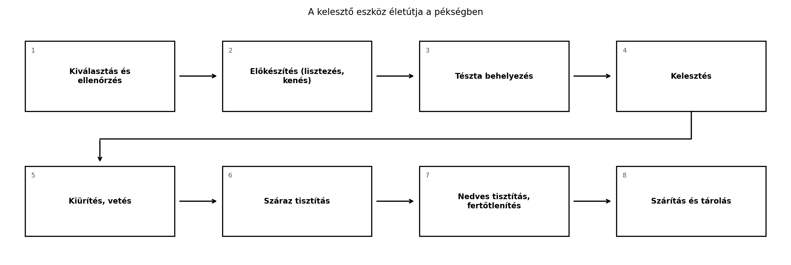

Adott egy pékségi reggel: a pék megformázta a rozskenyereket, és egyszerűen a lisztes asztalra sorakoztatta őket. Fél óra múlva a tésztadarabok szétterültek, egymáshoz értek, a felületük pedig száraz, bőrös lett. A kemencébe vetéskor a kenyér nem tudott szépen felnyílni, mert a felső réteg már megkötött. Ha a kelesztés alatt nem tartjuk meg a tészta alakját, a legjobb recept és a legszebb dagasztás ellenére is lapos, repedezett, egyenetlen héjú terméket kapunk.
A kelesztő eszközöket nem elég „csak ott tartani a sütőüzemben”. Termékenként el kell dönteni, hogy a tésztát szakajtóban, formában, vászonban vagy lemezen kelesztjük, és az eszközt elő is kell készíteni, tisztítani, tárolni. Ebben az alfejezetben a kelesztés eszközeit tárgyaljuk, a kelesztőkamra beállításához szükséges alapfogalmakkal együtt.
A kelesztő eszközök nem „egyszeri használatú” tárgyak: minden gyártási ciklusban ugyanazt a láncot járják végig. A folyamat lépéseit az alábbi ábra foglalja össze:

Az ábra azt mutatja, hogy a kelesztő eszközök használata nem ér véget a sütésnél: a kiürítés után azonnal jön a tisztítás, a szárítás és a megfelelő tárolás. Ha bármelyik lépés kimarad, az a következő tételnél hibához vezet: a nedves szakajtó megpenészedik, a sérült forma felsérti a tésztát, a piszkos kocsikerék behordja a szennyeződést a kelesztőkamrába.
Definíció. A szakajtó olyan kelesztő edény, amely a megformázott tésztadarabot kelesztés közben megtartja, és a kenyérnek jellegzetes formát, héjat vagy mintázatot ad. A szakajtóban a tészta a hajtásával lefelé vagy felfelé is elhelyezhető; a kenyérformától függően a vetés előtt a tésztát kiborítjuk belőle, vagy a szakajtóban hagyjuk addig, amíg a sütőlemezre/vetőlapátra nem kerül.
Definíció. A kelesztőláda nagyobb, nyitott vagy fiókos láda, amely elsősorban kenyértészták, nagyobb darabok vagy kisebb tételek kelesztésére szolgál. Gyakran fából vagy műanyagból készül, és kelesztővászonnal bélelhető.
Definíció. A kelesztővászon lisztezett textil, amely a tésztadarabokat egymástól elválasztva tartja. A vászon redőket képez, így a szomszédos tésztadarabok nem érnek össze, és a felületük egyenletesen szikkad. Hagyományos anyaga len vagy pamut; a mai üzemben gyakran bevonatos, mosható műszaki textilt használnak.
Definíció. A forma olyan kelesztő- és sütőedény, amely a termék végleges alakját adja. A formában a tésztadarab kelesztés és sütés közben is ugyanabban a geometriában marad; a forma anyaga hőálló fém (alumínium, ónozott vagy bevonatos acél), ritkábban a gyártó által sütésre engedélyezett hőálló szilikon; a műanyag szakajtó és láda csak kelesztésre való, a kemencébe nem tehető. Formát használunk például a szeletelt kenyérhez, a kalácshoz, a kuglófhoz vagy a fonott kenyérhez.
Definíció. A kelesztőkocsi kerekes állvány, amely szakajtókat, formákat vagy lemezeket hordoz. A kocsi mérete a kelesztőkamrához és a kemencéhez igazodik. A sütőlemezes kocsi olyan kocsi, amelynek polcain sütőlemezek vannak; a lemezek kelesztésre és sütésre egyaránt alkalmasak. A kelesztő-sütő lemez olyan lemez, amelyet kelesztéskor és sütéskor is használunk; lehet sima, perforált vagy bevonatos.
Definíció. A zárt légterű vetőszerkezetes kocsi olyan kocsi, amely a kelesztőkamrához vagy a kemence vetőrendszeréhez csatlakozik. A kocsi légterét a kamrával együtt szabályozzák, és a vetés mechanikusan történik. Ez a kialakítás a tésztát kevésbé teszi ki a külső levegőnek, és csökkenti a kézi beavatkozást. A zárt légterű rendszer használatakor a kocsi tömítését, sínjeit és a vetőszerkezet reteszelését is ellenőrizni kell.
A fenti eszközök közül a leggyakoribbakat az alábbi tabló mutatja be, panelenként léptékvonallal és az anyag jelölésével: kerek (1) és hosszúkás (2) vesszőszakajtó, műanyag szakajtó (3), kelesztőláda redőzött vászonnal (4), szögletes fém kenyérforma és fedeles forma (5), perforált vagy bevonatos sütőlemez (6), kelesztőkocsi szakajtókkal (7) és sütőlemezes kocsi (8).
Az eszköz anyaga (vessző, műanyag, fém, textil) dönti el, hogyan tisztítható és tárolható – erről a következő szakasz szól; a méreteket a kelesztőkamra és a kemence határozza meg (a rajzon tájékoztató példák). A HTML-kiadásban az eszközre mutatva rövid használati és higiéniai tudnivaló jelenik meg.
A kelesztő eszközök anyaga közvetlenül érintkezik a tésztával, ezért az anyagválasztás élelmiszer-biztonsági kérdés is.
Előírás. Az élelmiszerrel érintkező anyagoknak és tárgyaknak meg kell felelniük a vonatkozó uniós és nemzeti előírásoknak, elsősorban az 1935/2004/EK rendeletben és a nemzeti jogszabályokban foglaltaknak (ellenőrizendő: hatályos anyag- és tárgyszabályozás, nemzeti rendeletek). A példában bemutatott konkrét anyagok – fa, vessző, textil, műanyag, fém – csak akkor használhatók, ha a gyártó nyilatkozata szerint élelmiszerrel érintkezésre alkalmasak (ellenőrizendő: gyártói megfelelőségi nyilatkozat).
Fa és vessző. A hagyományos szakajtó anyaga a vessző, a fűzfa vagy a rattan. A fa és vessző előnye, hogy jól szellőzik, felveszi a tészta felületéről a felesleges nedvességet, és szép, rusztikus mintát ad a kenyérnek. Hátránya, hogy nehezen tisztítható, vízben duzzad, és ha nedvesen tároljuk, megpenészedik. Ezért a fából és vesszőből készült eszközöket elsősorban szárazon tisztítjuk, és csak kivételes esetben mossuk, utána azonnal, alaposan szárítjuk.
Műanyag. A műanyag szakajtók, kelesztőládák, kelesztőformák és kocsibetétek (sütésre nem alkalmasak, a kemencébe nem tehetők) sima felületűek, jól moshatók, fertőtleníthetők, és nem szívják magukba a nedvességet. A műanyagnak hőállónak, szagtalan, ízmentes anyagnak kell lennie, és nem adhat át vegyületet a tésztának. A karcolt, repedt műanyag felületen a szennyeződés és a mikroorganizmusok megtelepedhetnek, ezért a sérült darabot selejtezni kell.
Fém. A formák és a kelesztő-sütő lemezek gyakran alumíniumból, ónozott acélból vagy bevonatos acélból készülnek. A fém jól vezeti a hőt, így sütéskor egyenletes kéregképződést segít. A forma bevonata megakadályozza a ragadást, de ha megkarcolódik, a tészta letapad, és a fémből apró részecskék kerülhetnek a termékre. A fémforma csak akkor használható, ha élelmiszer-ipari célra alkalmas és nincs rozsdás, sérült, lepattogzott felülete.
Textil. A kelesztővászon természetes vagy műszaki szálból készülhet. A természetes vászon jól szívja a nedvességet, de mosás után nehezen szárad, és penészedhet. A mai üzemekben gyakran bevonatos, mosógépben is tisztítható vásznakat használnak. A textilnek nem szabad bolyhosodnia, mert a szálak a tésztára tapadhatnak.
A kiválasztásnál a tészta konzisztenciája, a termék kívánt formája és a gyártási technológia számít.
Szabály. Lágy, nagy vízfelszívású, gyengébb sikérvázú tésztát (például rozsos kenyeret, rozskenyeret) szakajtóban vagy formában kelesztünk, mert a szabad felületen szétterülne. A kelesztővászon közepesen lágy, hosszúkás darabokhoz (bagett, hosszú kenyér) való, a redők oldalról megtámasztják a darabot; kemény, formázott, jól tartó tésztát (például zsemlét, vizes péksüteményt) lemezen keleszthetünk.
Példa. Egy 800 g-os rozsos kenyérhez az üzemben vesszőből vagy műanyagból készült, kerek szakajtót választanak, mert a tészta lágy, és a kerek forma segít megtartani a bélzetet. A szakajtót lisztezik, a tésztadarabot a hajtásával felfelé helyezik bele, majd kelesztés után kiborítják a sütőlapátra. A kenyér héján a vessző mintája megmarad.
Megjegyzés. A szakajtó formája lehet kerek, ovális vagy hosszúkás. A kerek szakajtó gömbölyű kenyeret, a hosszúkás szakajtó ovális vagy hosszú cipót ad. A szakajtóban a tésztát gyakran a hajtásával felfelé tesszük, mert a kiborítás után a hajtás alulra kerül, és a felső, feszes oldal mintája szépen látszik.
A következő táblázat a leggyakoribb eszközválasztási helyzeteket foglalja össze:
| Termékcsoport jellemzője | Ajánlott eszköz | Megjegyzés |
|---|---|---|
| Lágy, nagy vízfelszívású tészta | Szakajtó, forma | Megtartja a formát, szabályozza a nedvességet |
| Kemény, formázott péksütemény | Sütőlemezes kocsi, lemez | Jól tartható, nagy darabszám |
| Formakenyér, kalács | Fém forma, bevonatos forma | Végleges alakot ad, sütésre is alkalmas |
| Kézműves kenyér, cipó | Vessző vagy műanyag szakajtó | Mintát ad, rusztikus héjat segít |
| Közepesen lágy, hosszúkás darabok (bagett, hosszú kenyér) | Kelesztővászon redőzve | Helytakarékos, de figyelni kell az összenövésre |
Lisztezés. A szakajtót, kelesztővásznat és a kelesztő ládát használat előtt vékonyan lisztezni kell. A lisztréteg megakadályozza, hogy a tészta beleragadjon, és egyenletesen szívja fel a nedvességet. A lisztezéshez általában ugyanazt vagy hasonló őrleményt használunk, mint a tésztához; durvább őrlemény (például rozsliszt vagy rizsliszt) is jó, mert kevésbé csomósodik (ellenőrizendő: üzemi gyakorlat). A felesleges lisztet használat után ki kell ütni a szakajtóból, hogy ne álljon össze csomókkal és ne avasodjon.
Kenés. A fémformákat és a sütőlemezeket a termék receptje szerint vékonyan bekenhetjük zsiradékkal, vagy használhatunk sütőlemez-bevonatot. A kenéshez használt anyag lehet olaj, vaj, margarin vagy pékáru-bevonat; a kenőanyag összetétele mindig szerepel az allergén-nyilvántartásban (ellenőrizendő: üzemi gyakorlat).
Allergén. A forma vagy lemez előkészítéséhez használt kenőanyag allergén lehet (például tejfehérje, tojás, szójalecitin). A közös forma vagy lemez használata ezért keresztszennyeződést okozhat. Egy adott allergéntől mentesként gyártott terméknél (pl. gluténmentes, tojásmentes; a „mentes” jelölés csak igazolt elkülönítéssel használható) külön, jelölt, tisztított lemezt/formát kell használni, és az adott allergént nem tartalmazó kenőanyagot kell használni (ellenőrizendő: pékség allergénkezelési terve).
Kelesztővászon redőzése. A vásznat úgy kell elhelyezni, hogy a tésztadarabok közé redő kerüljön. A redő magassága legalább akkora, mint a tészta kelés utáni átmérője, nehogy a szomszédos darabok összeérjenek. A vászonnak száraznak, lisztezettnek és szakadásmentesnek kell lennie.
Az alábbi keresztmetszet a kelesztőládán át mutatja a szabályt. Helyesen a lisztezett vászon (1) redői (2) legalább olyan magasak, mint a darab kelés utáni átmérője, így a kelés előtt (szaggatott) és után (pöttyös) ábrázolt darabok (3) nem érnek össze. Hibásan az alacsony redő (1) mellett a megkelt darabok összenőnek (2), és szétválasztáskor a felületük felszakad (3).
A redőt tehát nem a nyers, hanem a megkelt darabhoz kell méretezni; a túlzsúfolt vászon ugyanazt a hibát okozza, mint a túl közel rakott lemez (lásd a Tipikus hibák 3. pontját). A HTML-kiadásban a helyes és a hibás változat gombbal váltható.
Kocsi és lemez ellenőrzése. Használat előtt nézzük meg, hogy a kocsi kerekei szabadon gurulnak, a polcok nem görbültek, a lemezek nem sérültek, és a fékező szerkezet működik. A lemez ne legyen zsíros, nedves vagy maradványos; a sütőlemez felülete egyenletes, hólyagosodástól és rozsdától mentes legyen.
Lemezkiosztás. A lemezre helyezett darabok távolságát mindig a kelés utáni méretből számoljuk. A szélső darab középpontja a lemez szélétől szegély + sugár távolságra van, két szomszédos darab középpontja között pedig legalább átmérő + hézag távolság kell. Az alábbi ábra két esetet mutat egy 60×80 cm-es lemezen: (a) 20 cm-es darabnál 5 cm szegéllyel és 5 cm hézaggal a középpont-távolság 25 cm, a szélső középpont a széltől 15 cm, így hosszában 3, keresztben 2, összesen 6 darab fér el; (b) 12 cm-es zsemléből 4 × 3 = 12 darab egyenletesen elosztva 20 cm-es középpont-távolsággal és 8 cm-es hézaggal fér el.
A leggyakoribb hiba, hogy a szegélyt a darab széléig mérjük, de a középpont helyét elfelejtjük a sugárral eltolni, vagy a kelés előtti (szaggatott) mérettel számolunk. A HTML-kiadás lemezkiosztás-számítójában a lemez mérete, a kelés utáni átmérő, a szegély és a hézag állítható; a kalkulátor kiírja a sorok és oszlopok számát, és megrajzolja az elrendezést.
Figyelem. A sütőlemezes kocsi nehéz, ezért mozgatáskor a kocsit tolni kell, nem húzni. Kanyarban lassítsunk, és ügyeljünk a küszöbökre, lejtőkre. Forró lemezt csak hőálló kesztyűvel szabad megfogni; a forró lemezt soha ne tegyük műanyag felületre, mert az megolvadhat.
A kelesztő eszközök tisztítása nem halasztható a műszak végére: a tésztamaradék, a liszt és a nedvesség együtt penész- és baktériumforrás.
Higiénia. Az eszközök tisztítását is csak tiszta munkaruhában, hajhálóban, ékszer nélkül, ép kézbőrrel végezzük. A szennyezett eszközt élelmiszertől elkülönített helyen tisztítsuk. A takarítószereket az élelmiszertől elkülönítve, felcímkézve tároljuk (ellenőrizendő: üzemi takarítási utasítás).
Száraz tisztítás. A fából és vesszőből készült szakajtót, ládát és a kelesztővásznat elsősorban szárazon tisztítjuk: kefével, kaparóval távolítjuk el a lisztréteget és a tésztamaradványt. A fa- és vesszőfelületet nem szabad hosszan áztatni, mert a víz felszívódása után a szakajtó megvetemedik, és a belső rétegekben penész fejlődhet.
Nedves tisztítás. A műanyag szakajtót, ládát, formát és a fémlemezeket mosogathatjuk élelmiszer-ipari tisztítószerrel, majd fertőtleníthetjük az üzemben engedélyezett fertőtlenítőszerrel (ellenőrizendő: gyártói használati utasítás). A textil vásznat mosógépben, a gyártó szerint tisztítjuk, majd teljesen megszárítjuk.
Szárítás. A mosott eszközt mindig száraz, jól szellőző helyen, polcon vagy állványon kell szárítani, nem egymásra halmozva. A penész megelőzésének legegyszerűbb módja a teljes szárazság: a penészgombák spórái nedves, meleg környezetben szaporodnak. Ha a szakajtó dohos szagú, fekete vagy zöld foltos, azt ki kell vonni a használatból, és selejtezni kell.
Szabály. A kelesztő eszközöket csak szárazon, tisztán, fénytől és szennyeződéstől védett helyen tároljuk. A fa/vessző eszközöket ne tegyük közvetlenül a padozatra; használjunk rakodólapot vagy polcot. A kocsikat a tárolóhelyen rögzítsük, különösen ferde padlón.
A kelesztő eszközök használatának vannak olyan pontjai, ahol a szennyeződés, a penész vagy az idegen anyag bekerülhet a termékbe. Az alábbi táblázat tanulási példaként mutatja a veszélyeket és a lehetséges megelőző intézkedéseket; a tényleges határértékek a pékség HACCP-tervétől és a hatósági útmutatóktól függenek (ellenőrizendő: pékség HACCP-terve, hatósági útmutató).
| Műveleti lépés | Veszély | Megelőzés / tanulási határ | Monitoring / helyesbítés |
|---|---|---|---|
| Szakajtó, forma, lemez előkészítése | Mikrobiológiai: penész, kórokozó a szennyezett felületről | Tiszta, száraz eszköz; nedvesség nem látható | Szemrevételezés; szagvizsgálat; szennyezett eszköznél újra tisztítás |
| Kenés, zsiradék felvitele | Kémiai/allergén: avas zsiradék, allergén kenőanyag | Friss, jelölt kenőanyag; adott allergéntől mentes terméknél külön eszköz | Tételindítás előtti ellenőrzés; avas szagú anyag selejtezése |
| Kocsi, lemez mozgatása | Fizikai: sérülés, törött kocsielem, letört műanyag | Ép, stabil kocsi; nincs törött vagy repedt elem | Használat előtti szemle; hibánál kocsi kivonása |
| Tárolás, szárítás | Mikrobiológiai: penészedés nedves eszközön | Száraz, szellős tárolás; eszközök ne érjenek a padozathoz | Rendszeres leltár, szag- és foltvizsgálat; penészes eszköz selejtezése |
HACCP. A kelesztő eszközökkel kapcsolatos kritikus pont általában nem CCP, hanem a jó higiéniai gyakorlat (GHP) része, mert a későbbi kemencés sütés elpusztítja a legtöbb kórokozót, de a penésztoxinok és az idegen anyagok így is kockázatot jelentenek (ellenőrizendő: pékség HACCP-terve). A kelesztő eszközök tisztaságának hiánya elsősorban minőségi hiba (dohos íz, penészes folt) és keresztszennyező forrás, ezért a napi ellenőrzés része.
Egy kisüzemi pékségben a pék azt tapasztalta, hogy a reggeli kenyerek héja időnként dohos, penészes szagú lett, bár a tészta maga frissnek látszott. A hiba nem a lisztből vagy az élesztőből eredt: a vessző szakajtókat a műszak végén csak kiütötték, de a mosás után nedves helyiségben, egymásra halmozva tárolták. A szakajtók belső felülete egy hét alatt penészfoltossá vált. A pék a szakajtókat szárazon, szellős polcon kezdte tárolni, és a foltos, dohos darabokat selejtezte. A penészes szag megszűnt, és a kenyér héja ismét tiszta lisztes, enyhén savanykás illatú lett. A tanulság: a kelesztő eszköz nem hagyható nedvesen, mert a penész szagát a kenyér átveszi, még akkor is, ha a penész a sütésben elpusztul.
A kelesztő eszközök minőségét nemcsak élelmiszer-biztonsági, hanem technológiai szempontból is ellenőrizni kell. A megfelelő szakajtó, forma, vászon és lemez:
A kelesztés után ellenőrizzük a tészta felületét is: a szakajtóban kelt darab felülete egyenletesen lisztezett, nem repedezett, nem bőrös, nem nedves; a formában kelt tészta a forma pereméig emelkedett, de nem folyt ki.
Nedves szakajtó tárolása. Tünet: dohos, penészes szag, zöld vagy fekete foltok a szakajtón, dohos héj a kenyéren. Ok: a szakajtót mosás után nem szárították meg teljesen, vagy nedves helyen tárolták. Megelőzés: mindig száraz, szellős helyen tároljuk, és a penészes darabot selejtezzük.
Sérült bevonatú forma használata. Tünet: a tészta beleragad a formába, a késztermék oldalán fémkarcolás vagy sötét folt. Ok: a bevonat megkarcolódott, lepattogzott. Megelőzés: a sérült formát kivonjuk és felújítjuk vagy selejtezzük; kímélő eszközökkel dolgozunk.
Túlzsúfolt lemez vagy vászon. Tünet: a megkelt tésztadarabok összenőnek, a sütés után szakadás, egyenetlen kéreg. Ok: nem hagytunk elég helyet a keléshez, a redők alacsonyak. Megelőzés: a tészta várható mérete alapján számoljuk ki a távolságot, és ne feledjük, hogy a kelés közben a tészta akár 1,5–2-szeresére is nőhet (ellenőrizendő: üzemi paraméter).
Nem megfelelő eszközválasztás. Tünet: a lágy rozskenyér szétterül, a kemény zsemle összeesik a túl szoros szakajtóban. Ok: a tészta konzisztenciájához nem illő eszköz. Megelőzés: a kiválasztási szabályt alkalmazzuk: lágy tésztát megtartó eszközbe, kemény tésztát szabad lemezre.
1. feladat (A). Nevezd meg a szakajtó, a kelesztőláda és a kelesztővászon közötti különbséget, és írj mindegyikre egy-egy felhasználási példát.
2. feladat (A). Sorold fel, milyen anyagból készülhetnek a sütőipari formák, és milyen követelményeknek kell megfelelniük.
3. feladat (B). Egy formakenyér üzemben 900 g-os, hosszúkás formákat használnak. Egy kelesztőkocsin 15 polc van, polconként 4 forma. Számítsd ki, hány darab kenyeret tudnak egyszerre keleszteni, ha két kocsit tolnak a kelesztőkamrába.
4. feladat (B). Egy 60×80 cm-es sütőlemezre 12 zsemlét helyezünk. A zsemle kelés után 12 cm átmérőjű. Ellenőrizd, hogy nem érnek-e össze, ha a lemezt 4 sor × 3 oszlop elrendezésben használjuk, és a középpontok közötti távolság legalább 14 cm legyen. Értékeld az elrendezést, és ha hibás, javasolj jobbat.
5. feladat (C). Egy pékségben a vetőszerkezetes kocsi kerekeiről a kelesztőkamrába behordott morzsa miatt a reggeli ellenőrzés során egérürüléket találtak a kamra sarkában. Vizsgáld meg a helyzetet HACCP-szemlélettel: mi a veszély, mi lehet a kiváltó ok, és milyen intézkedéseket javasolsz a kocsi, a kamra és a takarítási gyakorlat terén?
6. feladat (D). Készíts ellenőrzőlistát a műszak végi szakajtó-tisztításhoz. A lista legalább 8 pontot tartalmazzon, és tüntesd fel, melyik lépésnél milyen eltérést kell észrevenni.
Önellenőrzés – válaszok
1. feladat megoldása. A szakajtó kelesztő edény, amely a tésztadarabot megtartja, és gyakran kiborítjuk belőle sütés előtt (például rozskenyér). A kelesztőláda nagyobb, nyitott vagy fiókos edény, tésztadarabok sorozatának kelesztésére (például több cipó). A kelesztővászon lisztezett textil, redőzve elválasztja a tésztadarabokat (például bagettek, hosszú kenyerek).
2. feladat megoldása. Alumínium, ónozott acél, bevonatos acél, élelmiszer-ipari műanyag. Követelmények: hőállóság, szagtalan, ízmentes, élelmiszerrel érintkezésre alkalmas anyag, sima, sértetlen felület, megfelelő hővezetés, könnyű tisztíthatóság.
3. feladat megoldása. Kocsinként: 15 polc × 4 forma = 60 db. Két kocsi: 60 × 2 = 120 db kenyér. Ez a tanulási példa a tényleges elrendezés függvénye; a kelesztőkamra alapterülete korlátozhat.
4. feladat megoldása. A zsemle kelés utáni sugara 6 cm. Egyenletes kiosztással a 60 cm-es oldalon a 3 oszlop középpontjai 10, 30 és 50 cm-nél, a 80 cm-es oldalon a 4 sor középpontjai 10, 30, 50 és 70 cm-nél vannak. A középpontok távolsága mindkét irányban 20 cm, ami több a kért legalább 14 cm-nél; a 12 cm-es zsemlék között 8 cm hézag, a lemez szélétől 4 cm marad. A 4 × 3-as elrendezés tehát megfelelő, a zsemlék nem érnek össze (vö. a lemezkiosztási ábra (b) részével). Ha a gyakorlatban szegély kell, azt a feladatban meg kell adni (pl. a lemez szélétől legalább 3 cm; tanulási példa).
5. feladat megoldása. Veszély: kártevők által terjesztett kórokozók, ürülék, fizikai szennyeződés. Ok: a kocsi kerekei morzsát és szennyeződést hordanak be; a kamra sarkában felhalmozódott törmelék; a takarítási terv nem terjed ki a kamra aljára és a kocsikerekekre. Intézkedések: kocsi belépés előtti keréktisztítás vagy kerékváltó zóna; a kamra rendszeres, alapos takarítása, sarkok ellenőrzése; a morzsát gyakrabban eltávolítani; kártevőirtási program és a bejáratnál rágcsálófogó ellenőrzése; a személyzet képzése a bevitel előtti ellenőrzésre. HACCP-szemlélet: ez elsősorban GHP- vagy alapeljárásbeli ellenőrzés, nem feltétlenül CCP, de a kártevő-ürülék jelenléte súlyos eltérés.
6. feladat megoldása. Példa ellenőrzőlistára: 1. Szakajtó kiürítése, tésztamaradék eltávolítása. 2. Száraz ecsetelés, lisztréteg kikefélése. 3. Szemrevételezés: repedés, penészfolt, dohos szag? 4. Ha mosható, nedves tisztítás engedélyezett szerrel. 5. Öblítés tiszta vízzel. 6. Fertőtlenítés az előírt szerrel, behatási idő betartása. 7. Szárítás szellős állványon, nem egymásra rakva. 8. Tárolás száraz, tiszta polcon, padozattól elválasztva. 9. Dokumentálás a takarítási naplóban. Eltérés: ha penészfoltot, repedést, dohos szagot találunk, a darabot kivonjuk, és szükség esetén selejtezzük.
A kelesztő eszközöknek kettős feladatuk van: megtartják a tészta alakját, és szabályozzák a felületi nedvesség- és bőrképződést. A szakajtó elsősorban kelesztő edény, amelyből a tésztát gyakran kiborítjuk; a kelesztőláda nagyobb, sorozatokhoz való; a kelesztővászon lisztezett textil, redőzve elválasztja a darabokat. A forma kelesztésre és sütésre egyaránt használható, és a termék végleges alakját adja. A kelesztőkocsi és a sütőlemezes kocsi a kelesztőkamrába való szállítást és a sorozatgyártást szolgálja; a kelesztő-sütő lemez sima, perforált vagy bevonatos lehet. A zárt légterű vetőszerkezetes kocsi a kamrához kapcsolódva szabályozott légteret és gépi vetést tesz lehetővé.
Az anyagok közül a fa és vessző jól szellőzik, de csak szárazon tisztítható; a műanyag és fém mosható, de a sérült bevonat idegen anyagot és ragadást okozhat. A textil vásznat mosás után teljesen meg kell szárítani. A penészedés leghatékonyabb megelőzése a száraz, szellős tárolás és a sérült, dohos eszközök selejtezése. A kiválasztás alapelve: lágy, szétterülő tésztához szakajtó vagy forma kell, kemény, formázott tésztához lemez vagy vászon is elég.
Továbbvitt eredmény. A kiválasztott, előkészített kelesztő eszközöket a kelesztőkamrába helyezzük. A kamra beállításához (Kelesztőkamrák és beállításuk) ismerni kell a kocsi méretét, a lemezek számát, a szakajtó vagy forma hő- és nedvességáteresztő tulajdonságát, valamint azt, hogy a kelesztőkamrában a levegő egyenletesen elérje-e a tésztadarabokat.